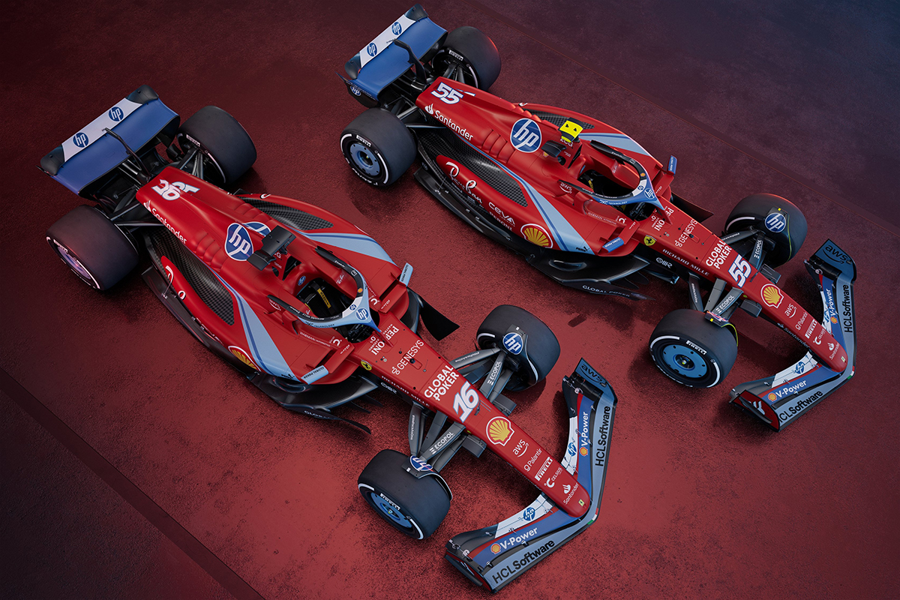
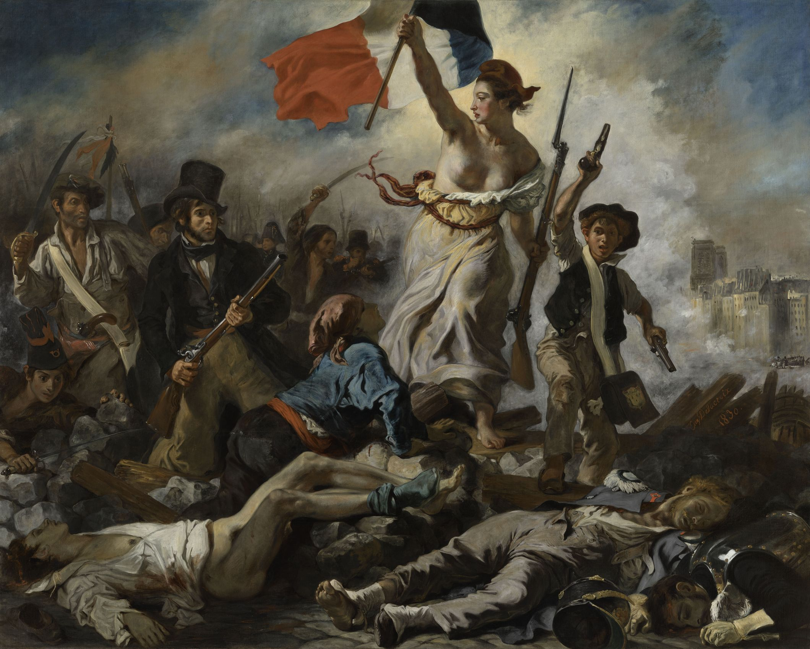
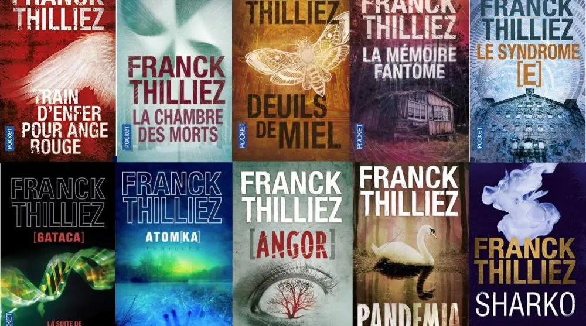
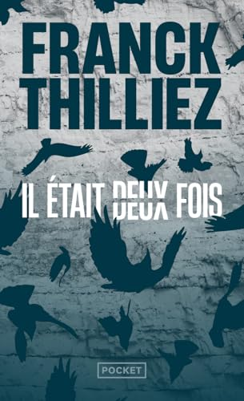
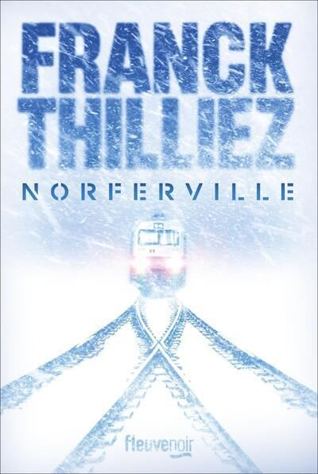
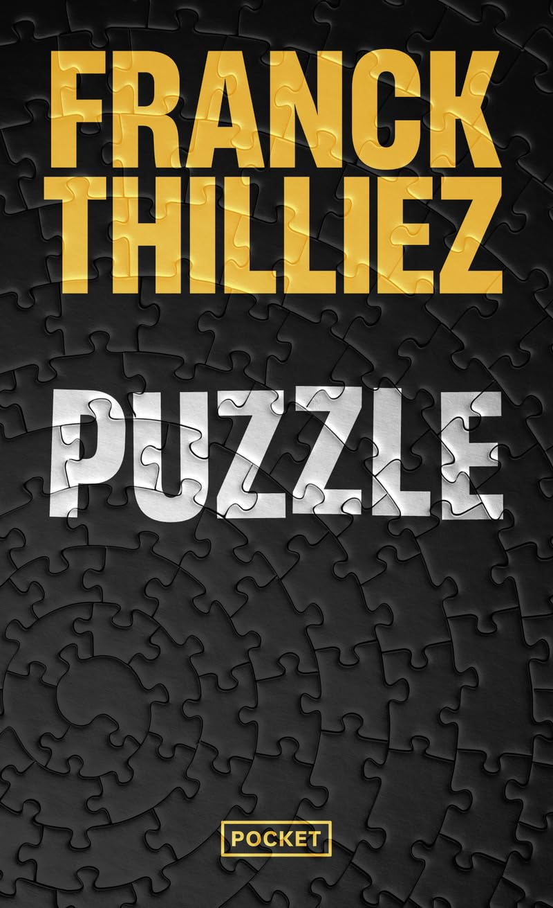

Mes passions et centres d'intérêt
Informatique & Cybersécurité
Je suis intéressé par la sécurité informatique, l'analyse de vulnérabilités et la protection des systèmes d'information. J'essaye de me tenir constamment informé des dernières menaces ainsi que des solutions de défense.
Jeux vidéos
Je suis amateur de jeux vidéos stratégiques et compétitifs. Les jeux me permettent de développer ma réflexion tactique et mon esprit d'équipe. Voici une liste non-exhaustive de quelques jeux auquels j'ai pu jouer : Minecraft, Valorant, GTA V, League of Legends, Trackmania, Rainbow Six Siege, CS:GO et CS2, Red Dead Redemption 2, Genshin Impact, Among Us, The Escapists 2, Openfront.io, Galaxy Life, Phasmophobia, etc...

Sports automobiles
Je regarde assez souvent le championnat de F1, ainsi que quelques courses du WEC. Je suis aussi régulièrement l'actualité du sport automobile et les évolutions technologiques des véhicules de compétition.

Histoire
L'Histoire me passionne depuis petit. J'ai quelques thématiques préférées comme les différentes guerres, notamment la 1ère et la 2nde GM, mais aussi l'instauration des différentes républiques en France.

Droit
J'ai décidé en classe Terminale de choisir l'option DGEMC (Droits et Grands Enjeux du Monde Contemporain) ce qui m'a apporté une meilleure compréhension des enjeux géopolitiques et du cadre juridique national.
DJ
Je suis intéressé par le mix depuis une dizaine d'années. J'ai acheté il y a peu la DDJ-FLX4 de chez Pioneer je m'initie aux techniques de DJing.

Lecture
Je suis amateur de romans policiers, notamment des œuvres de Franck Thilliez. Voici quelques uns que j'ai pu lire :

Il était deux fois
C'est un thriller qui mêle enquête policière et manipulation mentale. L'histoire suit une enquête sur des crimes liés à des souvenirs modifiés.

Norferville
Il s'agit d'un roman d'horreur où une ville entière semble piégée dans un cauchemar.

Puzzle
C'est un roman à l'intrigue complexe autour d'un tueur en série qui laisse des indices sous forme de puzzles.
Sports pratiqués
Natation
Pratique pendant 6 ans
Suivi régulier des compétitions nationales et internationales.
Tennis
Pratique pendant 5 ans
Suivi des grands tournois du Grand Chelem.

Cyclisme
Pratique régulière du vélo pour l'entretien physique et les déplacements.